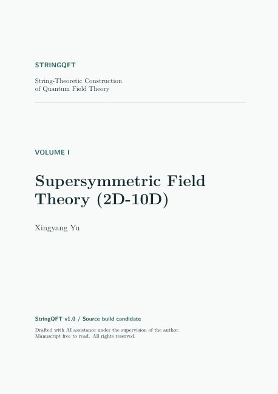
Volume I
Download PDF A textbook by Xingyang Yu
A collection exploring how quantum field theories emerge from strings, branes and geometry, with explicit physical dictionaries, derivations and worked examples.
First edition · November 2026
The reading collection
Select a cover to open its PDF in your browser, or download a copy to read offline.
The field theory, string, brane and geometry toolkit.

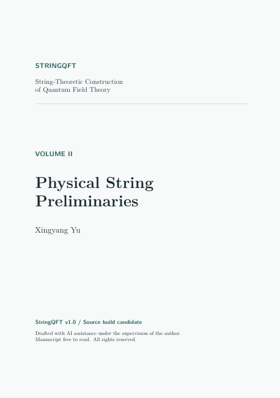
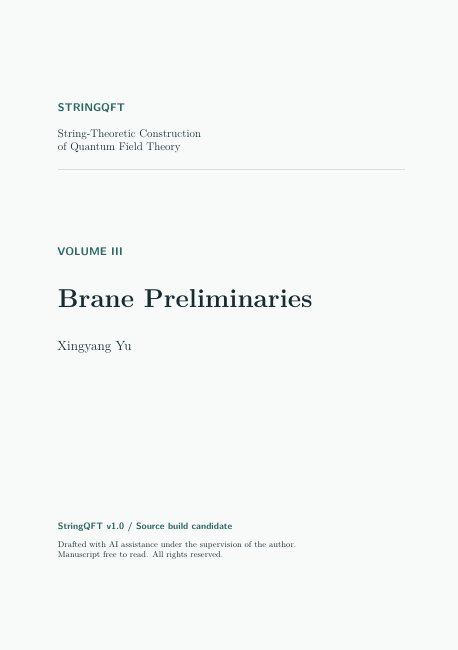
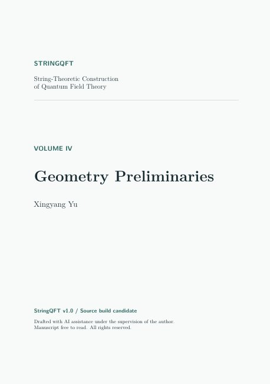
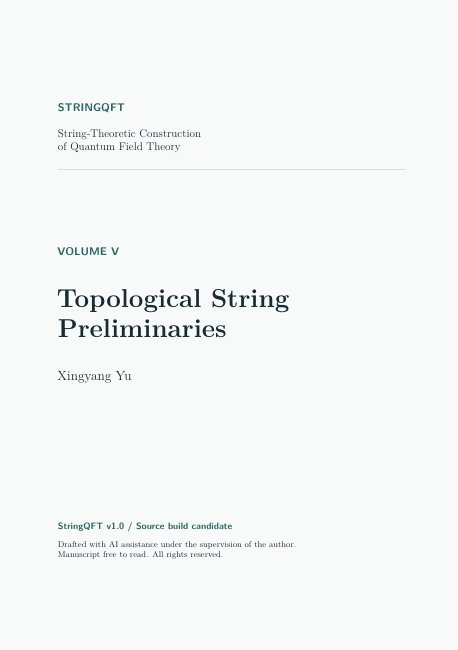
From singularity probes to brane dynamics and webs.
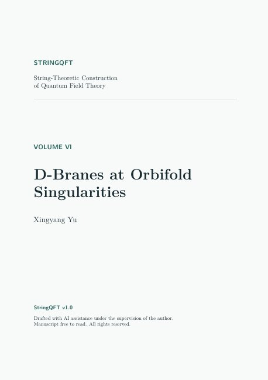
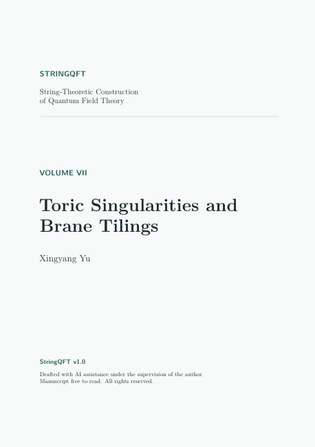
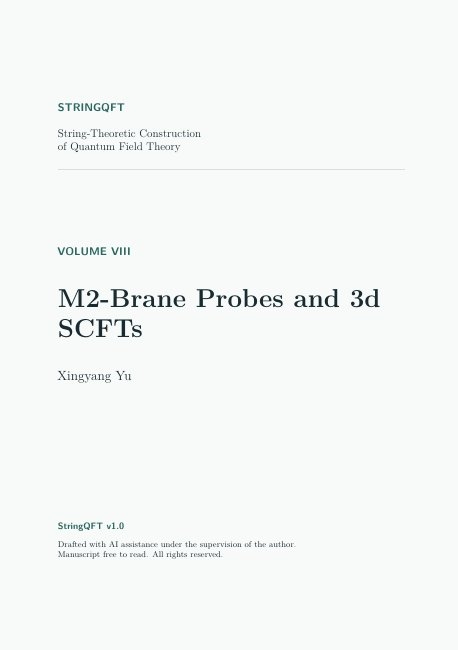
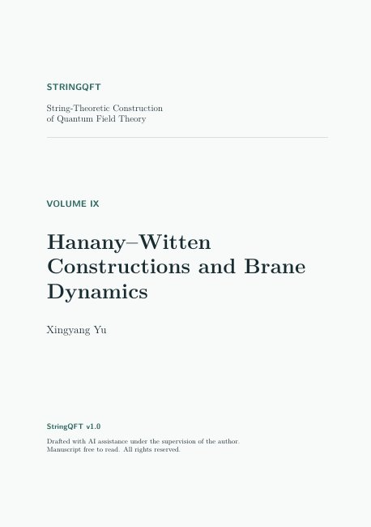
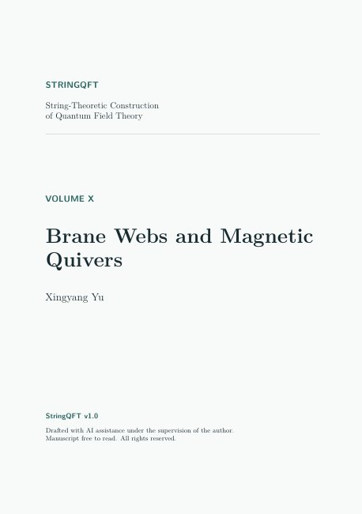
Type II strings, M-theory and F-theory constructions.
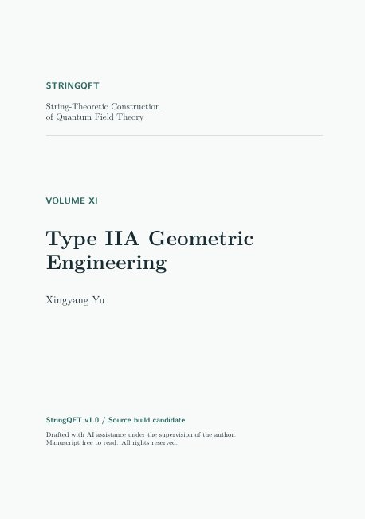
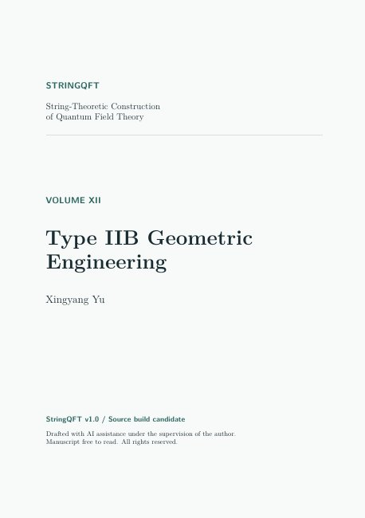
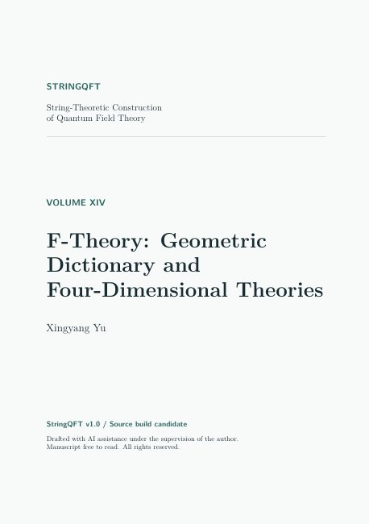
Class S, protected structures and worldsheet constructions.
These reading PDFs accompany the StringQFT v1.0 release. Volume XVI uses the updated title M5-Brane Theories and Class S; its chapter text is unchanged. Each volume retains its own prerequisites and scientific qualifications.
Drafted with AI assistance under the supervision of Xingyang Yu. Free to read does not imply unrestricted reuse: see the reuse terms. Code, editable sources and supporting resources are available on GitHub.
For corrections, please include the volume and page number when contacting the author.